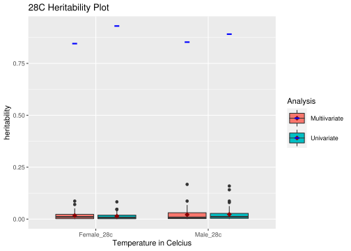

Last updated: 2022-03-24
Checks: 7 0
Knit directory: CoyneProject/
This reproducible R Markdown analysis was created with workflowr (version 1.7.0). The Checks tab describes the reproducibility checks that were applied when the results were created. The Past versions tab lists the development history.
Great! Since the R Markdown file has been committed to the Git repository, you know the exact version of the code that produced these results.
Great job! The global environment was empty. Objects defined in the global environment can affect the analysis in your R Markdown file in unknown ways. For reproduciblity it’s best to always run the code in an empty environment.
The command set.seed(20220228) was run prior to running the code in the R Markdown file. Setting a seed ensures that any results that rely on randomness, e.g. subsampling or permutations, are reproducible.
Great job! Recording the operating system, R version, and package versions is critical for reproducibility.
Nice! There were no cached chunks for this analysis, so you can be confident that you successfully produced the results during this run.
Great job! Using relative paths to the files within your workflowr project makes it easier to run your code on other machines.
Great! You are using Git for version control. Tracking code development and connecting the code version to the results is critical for reproducibility.
The results in this page were generated with repository version 766f1a3. See the Past versions tab to see a history of the changes made to the R Markdown and HTML files.
Note that you need to be careful to ensure that all relevant files for the analysis have been committed to Git prior to generating the results (you can use wflow_publish or wflow_git_commit). workflowr only checks the R Markdown file, but you know if there are other scripts or data files that it depends on. Below is the status of the Git repository when the results were generated:
Ignored files:
Ignored: .RData
Ignored: .Rproj.user/
Unstaged changes:
Modified: analysis/Background.Rmd
Modified: analysis/style.css
Note that any generated files, e.g. HTML, png, CSS, etc., are not included in this status report because it is ok for generated content to have uncommitted changes.
These are the previous versions of the repository in which changes were made to the R Markdown (analysis/Results.Rmd) and HTML (docs/Results.html) files. If you’ve configured a remote Git repository (see ?wflow_git_remote), click on the hyperlinks in the table below to view the files as they were in that past version.
| File | Version | Author | Date | Message |
|---|---|---|---|---|
| Rmd | 766f1a3 | kcoyne998 | 2022-03-24 | details |
| html | 78dbdd3 | kcoyne998 | 2022-03-24 | Build site. |
| Rmd | ab80e5d | kcoyne998 | 2022-03-24 | details |
| html | 2de29ea | kcoyne998 | 2022-03-24 | Build site. |
| Rmd | 7a11d51 | kcoyne998 | 2022-03-24 | details |
| html | 6b43c9d | kcoyne998 | 2022-03-10 | Build site. |
| Rmd | 0e8c683 | kcoyne998 | 2022-03-10 | Update before meeting 3/10 |
| html | 24ab69e | kcoyne998 | 2022-03-10 | Build site. |
| Rmd | 7dd2804 | kcoyne998 | 2022-03-10 | Update before meeting 3/10 |
| html | 21f3b95 | kcoyne998 | 2022-03-10 | Build site. |
| Rmd | eb35db6 | kcoyne998 | 2022-03-10 | Customize website style. |
| html | 7c0e2b4 | kcoyne998 | 2022-03-10 | Build site. |
| Rmd | d063bf0 | kcoyne998 | 2022-03-10 | Customize website style. |
| html | 6c5eb00 | kcoyne998 | 2022-03-07 | Build site. |
| Rmd | 9cff614 | kcoyne998 | 2022-03-07 | Publishing of Results and Home |
| html | 31c4f38 | kcoyne998 | 2022-03-03 | Build site. |
| Rmd | 6d51bfd | kcoyne998 | 2022-03-03 | Publishing of Results |
| html | 9d4613b | kcoyne998 | 2022-03-01 | Build site. |
| Rmd | c40e3b5 | kcoyne998 | 2022-03-01 | Results in Boxplots |
| html | 96b9a00 | kcoyne998 | 2022-03-01 | Build site. |
| html | 6027177 | kcoyne998 | 2022-03-01 | Build site. |
| Rmd | d1da32d | kcoyne998 | 2022-03-01 | Results in Boxplots |
The boxplots below separated the data sets by sex and did univariate and multivariate analysis of the lifespans of the drosophila in three separate temperature conditions: 18C, 25C, and 28C. Within the plots the boxplots are grouped by temperature for univariate and multivariate analysis. The values of the boxplot consist of 50 observations of the R squared values. Within the boxplots the red diamond shows the mean of the R squared values and the blue line shows the mean of 50 observations of the heritability values. The Female heritability Plot is first followed by the Male heritability Plot.
library(ggplot2)
###Reading in results
female_res <- readRDS("/data/morgante_lab/kcoyne/mv_project/results/gblup_vs_mvgblup_drosophila_h2_female.rds")
male_res <- readRDS("/data/morgante_lab/kcoyne/mv_project/results/gblup_vs_mvgblup_drosophila_h2_male.rds")
###Female r2 data loaded into one file, then seperated and made into data frames
female_r2 <- list(female_r2_gblup=female_res$r2_gblup_FEMALE, female_r2_mvgblup=female_res$r2_mvgblup_FEMALE)
female_r2_gblub <- female_r2$female_r2_gblup
female_r2_gblub <- as.data.frame(female_r2_gblub)
female_r2_mvgblub <- female_r2$female_r2_mvgblup
female_r2_mvgblub <- as.data.frame(female_r2_mvgblub)
female_r2_data <- merge(female_r2_gblub, female_r2_mvgblub, by = 0)
rownames(female_r2_data) <- female_r2_data[,1]
female_r2_data <- female_r2_data[,-1]
colnames(female_r2_data) <- c('Female_18c_uni','Female_25c_uni','Female_28c_uni','Female_18c_multi','Female_25c_multi','Female_28c_multi')
female_r2_data <- female_r2_data[, c(1,4,2,5,3,6)]
###Male r2 data loaded into one file, then seperated and made into data frames
male_r2 <- list(male_r2_gblup=male_res$r2_gblup_MALE, male_r2_mvgblup=male_res$r2_mvgblup_MALE)
male_r2_gblub <- male_r2$male_r2_gblup
male_r2_gblub <- as.data.frame(male_r2_gblub)
male_r2_mvgblub <- male_r2$male_r2_mvgblup
male_r2_mvgblub <- as.data.frame(male_r2_mvgblub)
male_r2_data <- merge(male_r2_gblub, male_r2_mvgblub, by = 0)
rownames(male_r2_data) <- male_r2_data[,1]
male_r2_data <- male_r2_data[,-1]
colnames(male_r2_data) <- c('Male_18c_uni','Male_25c_uni','Male_28c_uni','Male_18c_multi','Male_25c_multi','Male_28c_multi')
male_r2_data <- male_r2_data[, c(1,4,2,5,3,6)]
###Female h2 data loaded into one file, then seperated and made into data frames
female_h2 <- list(female_h2_gblup=female_res$h2_gblup_FEMALE, female_h2_mvgblup=female_res$h2_mvgblup_FEMALE)
female_h2_gblub <- female_h2$female_h2_gblup
female_h2_gblub <- as.data.frame(female_h2_gblub)
female_h2_mvgblub <- female_h2$female_h2_mvgblup
female_h2_mvgblub <- as.data.frame(female_h2_mvgblub)
female_h2_data <- merge(female_h2_gblub, female_h2_mvgblub, by = 0)
rownames(female_h2_data) <- female_h2_data[,1]
female_h2_data <- female_h2_data[,-1]
colnames(female_h2_data) <- c('Female_18c_uni','Female_25c_uni','Female_28c_uni','Female_18c_multi','Female_25c_multi','Female_28c_multi')
female_h2_data <- female_h2_data[, c(1,4,2,5,3,6)]
###Male h2 data loaded into one file, then seperated and made into data frames
male_h2 <- list(male_h2_gblup=male_res$h2_gblup_MALE, male_h2_mvgblup=male_res$h2_mvgblup_MALE)
male_h2_gblub <- male_h2$male_h2_gblup
male_h2_gblub <- as.data.frame(male_h2_gblub)
male_h2_mvgblub <- male_h2$male_h2_mvgblup
male_h2_mvgblub <- as.data.frame(male_h2_mvgblub)
male_h2_data <- merge(male_h2_gblub, male_h2_mvgblub, by = 0)
rownames(male_h2_data) <- male_h2_data[,1]
male_h2_data <- male_h2_data[,-1]
colnames(male_h2_data) <- c('Male_18c_uni','Male_25c_uni','Male_28c_uni','Male_18c_multi','Male_25c_multi','Male_28c_multi')
male_h2_data <- male_h2_data[, c(1,4,2,5,3,6)]
###Finding average of female r2 data
female_r2_means <- (colMeans(female_r2_data, na.rm = TRUE))
###Finding average of female h2 data
female_h2_means <- (colMeans(female_h2_data, na.rm = TRUE))
#Fixing female data for Boxplot
stacked_female_r2_gblub <- stack(female_r2_gblub)
vec <- rep("Univariate", 150)
stacked_female_r2_gblub$Analysis <- vec
stacked_female_r2_mvgblub <- stack(female_r2_mvgblub)
vecmv <- rep("Multiivariate", 150)
stacked_female_r2_mvgblub$Analysis <- vecmv
stacked_female_h2_gblub <- stack(female_h2_gblub)
vec <- rep("Univariate", 150)
stacked_female_h2_gblub$Analysis <- vec
stacked_female_h2_mvgblub <- stack(female_h2_mvgblub)
vecmv <- rep("Multiivariate", 150)
stacked_female_h2_mvgblub$Analysis <- vecmv
stacked_female_r2_data <- rbind(stacked_female_r2_gblub, stacked_female_r2_mvgblub)
stacked_female_h2_data <- rbind(stacked_female_h2_gblub, stacked_female_h2_mvgblub)
###Finding average of male r2 data
male_r2_means <- (colMeans(male_r2_data, na.rm = TRUE))
###Finding average of male h2 data
male_h2_means <- (colMeans(male_h2_data, na.rm = TRUE))
#Fixing male data for Boxplot
stacked_male_r2_gblub <- stack(male_r2_gblub)
vec <- rep("Univariate", 150)
stacked_male_r2_gblub$Analysis <- vec
stacked_male_r2_mvgblub <- stack(male_r2_mvgblub)
vecmv <- rep("Multiivariate", 150)
stacked_male_r2_mvgblub$Analysis <- vecmv
stacked_male_h2_gblub <- stack(male_h2_gblub)
vec <- rep("Univariate", 150)
stacked_male_h2_gblub$Analysis <- vec
stacked_male_h2_mvgblub <- stack(male_h2_mvgblub)
vecmv <- rep("Multiivariate", 150)
stacked_male_h2_mvgblub$Analysis <- vecmv
stacked_male_r2_data <- rbind(stacked_male_r2_gblub, stacked_male_r2_mvgblub)
stacked_male_h2_data <- rbind(stacked_male_h2_gblub, stacked_male_h2_mvgblub)
##Female Boxplot
boxplot_female <- ggplot(stacked_female_r2_data, aes(x=ind, y=values, fill = Analysis))+
geom_boxplot()+
labs(title = 'Female Heritability Plot', x = 'Temperature in Celcius', y = 'heritability')+
stat_summary(fun=mean, colour="darkred", geom="point",
shape=18, size=3, position = position_dodge2(width = 0.75,
preserve = "single"))+
stat_summary(data = stacked_female_h2_data, fun = mean, colour="blue", geom="point",
shape="-", size=10, position = position_dodge2(width = 0.75,
preserve = "single"))
boxplot_female
##Male Boxplot
boxplot_male <- ggplot(stacked_male_r2_data, aes(x=ind, y=values, fill = Analysis))+
geom_boxplot()+
labs(title = 'Male Heritability Plot', x = 'Temperature in Celcius', y = 'heritability')+
stat_summary(fun=mean, colour="darkred", geom="point",
shape=18, size=3, position = position_dodge2(width = 0.75,
preserve = "single"))+
stat_summary(data = stacked_male_h2_data, fun = mean, colour="blue", geom="point",
shape="-", size=10, position = position_dodge2(width = 0.75,
preserve = "single"))
boxplot_male
The boxplots below separated the data sets by the temperature environments: 18C, 25C, and 28C, and did univariate and multivariate analysis of the lifespans of the drosophila of both sexes withing the temperature environments. Within the plots the boxplots are grouped by temperature for univariate and multivariate analysis. The values of the boxplot consist of 50 observations of the R squared values. Within the boxplots the red diamond shows the mean of the R squared values and the blue line shows the mean of 50 observations of the heritability values. The plot for the environemnt 18C is first followed by the 25C heritability Plot and then the 28C heritability Plot.
library(ggplot2)
###Reading in results
temp18c_res <- readRDS("/data/morgante_lab/kcoyne/mv_project/results/gblup_vs_mvgblup_drosophila_18c.rds")
temp25c_res <- readRDS("/data/morgante_lab/kcoyne/mv_project/results/gblup_vs_mvgblup_drosophila_25c.rds")
temp28c_res <- readRDS("/data/morgante_lab/kcoyne/mv_project/results/gblup_vs_mvgblup_drosophila_28c.rds")
###18c r2 data loaded into one file, then seperated and made into data frames
temp18c_r2 <- list(temp18c_r2_gblup=temp18c_res$r2_gblup_18c, temp18c_r2_mvgblup=temp18c_res$r2_mvgblup_18c)
temp18c_r2_gblub <- temp18c_r2$temp18c_r2_gblup
temp18c_r2_gblub <- as.data.frame(temp18c_r2_gblub)
temp18c_r2_mvgblub <- temp18c_r2$temp18c_r2_mvgblup
temp18c_r2_mvgblub <- as.data.frame(temp18c_r2_mvgblub)
temp18c_r2_data <- merge(temp18c_r2_gblub, temp18c_r2_mvgblub, by = 0)
rownames(temp18c_r2_data) <- temp18c_r2_data[,1]
temp18c_r2_data <- temp18c_r2_data[,-1]
colnames(temp18c_r2_data) <- c('Female_18c_uni','Female_18c_multi','Male_18c_uni','Male_18c_multi')
###25c r2 data loaded into one file, then seperated and made into data frames
temp25c_r2 <- list(temp25c_r2_gblup=temp25c_res$r2_gblup_25c, temp25c_r2_mvgblup=temp25c_res$r2_mvgblup_25c)
temp25c_r2_gblub <- temp25c_r2$temp25c_r2_gblup
temp25c_r2_gblub <- as.data.frame(temp25c_r2_gblub)
temp25c_r2_mvgblub <- temp25c_r2$temp25c_r2_mvgblup
temp25c_r2_mvgblub <- as.data.frame(temp25c_r2_mvgblub)
temp25c_r2_data <- merge(temp25c_r2_gblub, temp25c_r2_mvgblub, by = 0)
rownames(temp25c_r2_data) <- temp25c_r2_data[,1]
temp25c_r2_data <- temp25c_r2_data[,-1]
colnames(temp25c_r2_data) <- c('Female_25c_uni','Female_25c_multi','Male_25c_uni','Male_25c_multi')
###28c r2 data loaded into one file, then seperated and made into data frames
temp28c_r2 <- list(temp28c_r2_gblup=temp28c_res$r2_gblup_28c, temp28c_r2_mvgblup=temp28c_res$r2_mvgblup_28c)
temp28c_r2_gblub <- temp28c_r2$temp28c_r2_gblup
temp28c_r2_gblub <- as.data.frame(temp28c_r2_gblub)
temp28c_r2_mvgblub <- temp28c_r2$temp28c_r2_mvgblup
temp28c_r2_mvgblub <- as.data.frame(temp28c_r2_mvgblub)
temp28c_r2_data <- merge(temp28c_r2_gblub, temp28c_r2_mvgblub, by = 0)
rownames(temp28c_r2_data) <- temp28c_r2_data[,1]
temp28c_r2_data <- temp28c_r2_data[,-1]
colnames(temp28c_r2_data) <- c('Female_28c_uni','Female_28c_multi','Male_28c_uni','Male_28c_multi')
###h2 data being input and organized
###18c h2 data loaded into one file, then seperated and made into data frames
temp18c_h2 <- list(temp18c_h2_gblup=temp18c_res$h2_gblup_18c, temp18c_h2_mvgblup=temp18c_res$h2_mvgblup_18c)
temp18c_h2_gblub <- temp18c_h2$temp18c_h2_gblup
temp18c_h2_gblub <- as.data.frame(temp18c_h2_gblub)
temp18c_h2_mvgblub <- temp18c_h2$temp18c_h2_mvgblup
temp18c_h2_mvgblub <- as.data.frame(temp18c_h2_mvgblub)
temp18c_h2_data <- merge(temp18c_h2_gblub, temp18c_h2_mvgblub, by = 0)
rownames(temp18c_h2_data) <- temp18c_h2_data[,1]
temp18c_h2_data <- temp18c_h2_data[,-1]
colnames(temp18c_h2_data) <- c('Female_18c_uni','Female_18c_multi','Male_18c_uni','Male_18c_multi')
###25c h2 data loaded into one file, then seperated and made into data frames
temp25c_h2 <- list(temp25c_h2_gblup=temp25c_res$h2_gblup_25c, temp25c_h2_mvgblup=temp25c_res$h2_mvgblup_25c)
temp25c_h2_gblub <- temp25c_h2$temp25c_h2_gblup
temp25c_h2_gblub <- as.data.frame(temp25c_h2_gblub)
temp25c_h2_mvgblub <- temp25c_h2$temp25c_h2_mvgblup
temp25c_h2_mvgblub <- as.data.frame(temp25c_h2_mvgblub)
temp25c_h2_data <- merge(temp25c_h2_gblub, temp25c_h2_mvgblub, by = 0)
rownames(temp25c_h2_data) <- temp25c_h2_data[,1]
temp25c_h2_data <- temp25c_h2_data[,-1]
colnames(temp25c_h2_data) <- c('Female_18c_uni','Female_18c_multi','Male_18c_uni','Male_18c_multi')
###28c h2 data loaded into one file, then seperated and made into data frames
temp28c_h2 <- list(temp28c_h2_gblup=temp28c_res$h2_gblup_28c, temp28c_h2_mvgblup=temp28c_res$h2_mvgblup_28c)
temp28c_h2_gblub <- temp28c_h2$temp28c_h2_gblup
temp28c_h2_gblub <- as.data.frame(temp28c_h2_gblub)
temp28c_h2_mvgblub <- temp28c_h2$temp28c_h2_mvgblup
temp28c_h2_mvgblub <- as.data.frame(temp28c_h2_mvgblub)
temp28c_h2_data <- merge(temp28c_h2_gblub, temp28c_h2_mvgblub, by = 0)
rownames(temp28c_h2_data) <- temp28c_h2_data[,1]
temp28c_h2_data <- temp28c_h2_data[,-1]
colnames(temp28c_h2_data) <- c('Female_18c_uni','Female_18c_multi','Male_18c_uni','Male_18c_multi')
###Finding average of 18c r2 data
temp18c_r2_means <- (colMeans(temp18c_r2_data, na.rm = TRUE))
###Finding average of 18c h2 data
temp18c_h2_means <- (colMeans(temp18c_h2_data, na.rm = TRUE))
#Fixing 18C data for Boxplot
stacked_temp18c_r2_gblub <- stack(temp18c_r2_gblub)
vec <- rep("Univariate", 100)
stacked_temp18c_r2_gblub$Analysis <- vec
stacked_temp18c_r2_mvgblub <- stack(temp18c_r2_mvgblub)
vecmv <- rep("Multiivariate", 100)
stacked_temp18c_r2_mvgblub$Analysis <- vecmv
stacked_temp18c_h2_gblub <- stack(temp18c_h2_gblub)
vec <- rep("Univariate", 100)
stacked_temp18c_h2_gblub$Analysis <- vec
stacked_temp18c_h2_mvgblub <- stack(temp18c_h2_mvgblub)
vecmv <- rep("Multiivariate", 100)
stacked_temp18c_h2_mvgblub$Analysis <- vecmv
stacked_temp18c_r2_data <- rbind(stacked_temp18c_r2_gblub, stacked_temp18c_r2_mvgblub)
stacked_temp18c_h2_data <- rbind(stacked_temp18c_h2_gblub, stacked_temp18c_h2_mvgblub)
###Finding average of 25c r2 data
temp25c_r2_means <- (colMeans(temp25c_r2_data, na.rm = TRUE))
###Finding average of 25c h2 data
temp25c_h2_means <- (colMeans(temp25c_h2_data, na.rm = TRUE))
#Fixing 25C data for Boxplot
stacked_temp25c_r2_gblub <- stack(temp25c_r2_gblub)
vec <- rep("Univariate", 100)
stacked_temp25c_r2_gblub$Analysis <- vec
stacked_temp25c_r2_mvgblub <- stack(temp25c_r2_mvgblub)
vecmv <- rep("Multiivariate", 100)
stacked_temp25c_r2_mvgblub$Analysis <- vecmv
stacked_temp25c_h2_gblub <- stack(temp25c_h2_gblub)
vec <- rep("Univariate", 100)
stacked_temp25c_h2_gblub$Analysis <- vec
stacked_temp25c_h2_mvgblub <- stack(temp25c_h2_mvgblub)
vecmv <- rep("Multiivariate", 100)
stacked_temp25c_h2_mvgblub$Analysis <- vecmv
stacked_temp25c_r2_data <- rbind(stacked_temp25c_r2_gblub, stacked_temp25c_r2_mvgblub)
stacked_temp25c_h2_data <- rbind(stacked_temp25c_h2_gblub, stacked_temp25c_h2_mvgblub)
###Finding average of 28c r2 data
temp28c_r2_means <- (colMeans(temp28c_r2_data, na.rm = TRUE))
###Finding average of 28c h2 data
temp28c_h2_means <- (colMeans(temp28c_h2_data, na.rm = TRUE))
#Fixing 28C data for Boxplot
stacked_temp28c_r2_gblub <- stack(temp28c_r2_gblub)
vec <- rep("Univariate", 100)
stacked_temp28c_r2_gblub$Analysis <- vec
stacked_temp28c_r2_mvgblub <- stack(temp28c_r2_mvgblub)
vecmv <- rep("Multiivariate", 100)
stacked_temp28c_r2_mvgblub$Analysis <- vecmv
stacked_temp28c_h2_gblub <- stack(temp28c_h2_gblub)
vec <- rep("Univariate", 100)
stacked_temp28c_h2_gblub$Analysis <- vec
stacked_temp28c_h2_mvgblub <- stack(temp28c_h2_mvgblub)
vecmv <- rep("Multiivariate", 100)
stacked_temp28c_h2_mvgblub$Analysis <- vecmv
stacked_temp28c_r2_data <- rbind(stacked_temp28c_r2_gblub, stacked_temp28c_r2_mvgblub)
stacked_temp28c_h2_data <- rbind(stacked_temp28c_h2_gblub, stacked_temp28c_h2_mvgblub)
##18C Boxplot
boxplot_18c <- ggplot(stacked_temp18c_r2_data, aes(x=ind, y=values, fill = Analysis))+
geom_boxplot()+
labs(title = '18C Heritability Plot', x = 'Temperature in Celcius', y = 'heritability')+
stat_summary(fun=mean, colour="darkred", geom="point",
shape=18, size=3, position = position_dodge2(width = 0.75,
preserve = "single"))+
stat_summary(data = stacked_temp18c_h2_data, fun = mean, colour="blue", geom="point",
shape="-", size=10, position = position_dodge2(width = 0.75,
preserve = "single"))
boxplot_18c
##25C Boxplot
boxplot_25c <- ggplot(stacked_temp25c_r2_data, aes(x=ind, y=values, fill = Analysis))+
geom_boxplot()+
labs(title = '25C Heritability Plot', x = 'Temperature in Celcius', y = 'heritability')+
stat_summary(fun=mean, colour="darkred", geom="point",
shape=18, size=3, position = position_dodge2(width = 0.75,
preserve = "single"))+
stat_summary(data = stacked_temp25c_h2_data, fun = mean, colour="blue", geom="point",
shape="-", size=10, position = position_dodge2(width = 0.75,
preserve = "single"))
boxplot_25c
##28C Boxplot
boxplot_28c <- ggplot(stacked_temp28c_r2_data, aes(x=ind, y=values, fill = Analysis))+
geom_boxplot()+
labs(title = '28C Heritability Plot', x = 'Temperature in Celcius', y = 'heritability')+
stat_summary(fun=mean, colour="darkred", geom="point",
shape=18, size=3, position = position_dodge2(width = 0.75,
preserve = "single"))+
stat_summary(data = stacked_temp28c_h2_data, fun = mean, colour="blue", geom="point",
shape="-", size=10, position = position_dodge2(width = 0.75,
preserve = "single"))
boxplot_28c
The boxplots below took all the available data for the lifespan of drosophila and performed univariate and multivariate analysis. The values of the boxplot consist of 50 observations of the R squared values. Within the boxplots the red diamond shows the mean of the R squared values and the blue line shows the mean of 50 observations of the heritability values.
library(ggplot2)
###Reading in results
all_res <- readRDS("/data/morgante_lab/kcoyne/mv_project/results/gblup_vs_mvgblup_drosophila_all.rds")
###r2 data loaded into one file, then seperated and made into data frames
all_r2 <- list(r2_gblup=all_res$r2_gblup, r2_mvgblup=all_res$r2_mvgblup)
r2_gblub <- all_r2$r2_gblup
r2_gblub <- as.data.frame(r2_gblub)
r2_mvgblub <- all_r2$r2_mvgblup
r2_mvgblub <- as.data.frame(r2_mvgblub)
r2_data <- merge(r2_gblub, r2_mvgblub, by = 0)
rownames(r2_data) <- r2_data[,1]
r2_data <- r2_data[,-1]
r2_data <- r2_data[, c(1,7,2,8,3,9,4,10,5,11,6,12)]
colnames(r2_data) <- c('Female_18c_uni','Female_18c_multi','Female_25c_uni','Female_25c_multi','Female_28c_uni','Female_28c_multi','Male_18c_uni','Male_18c_multi','Male_25c_uni','Male_25c_multi','Male_28c_uni','Male_28c_multi')
###h2 data loaded into one file, then seperated and made into data frames
all_h2 <- list(h2_gblup=all_res$h2_gblup, h2_mvgblup=all_res$h2_mvgblup)
h2_gblub <- all_h2$h2_gblup
h2_gblub <- as.data.frame(h2_gblub)
h2_mvgblub <- all_h2$h2_mvgblup
h2_mvgblub <- as.data.frame(h2_mvgblub)
h2_data <- merge(h2_gblub, h2_mvgblub, by = 0)
rownames(h2_data) <- h2_data[,1]
h2_data <- h2_data[,-1]
h2_data <- h2_data[, c(1,7,2,8,3,9,4,10,5,11,6,12)]
colnames(h2_data) <- c('Female_18c_uni','Female_18c_multi','Female_25c_uni','Female_25c_multi','Female_28c_uni','Female_28c_multi','Male_18c_uni','Male_18c_multi','Male_25c_uni','Male_25c_multi','Male_28c_uni','Male_28c_multi')
###Finding average of r2 data
r2_means <- (colMeans(r2_data, na.rm = TRUE))
###Finding average of h2 data
h2_means <- (colMeans(h2_data, na.rm = TRUE))
#Fixing data for Boxplot
stacked_r2_gblub <- stack(r2_gblub)
vec <- rep("Univariate", 100)
stacked_r2_gblub$Analysis <- vec
stacked_r2_mvgblub <- stack(r2_mvgblub)
vecmv <- rep("Multiivariate", 100)
stacked_r2_mvgblub$Analysis <- vecmv
stacked_h2_gblub <- stack(h2_gblub)
vec <- rep("Univariate", 100)
stacked_h2_gblub$Analysis <- vec
stacked_h2_mvgblub <- stack(h2_mvgblub)
vecmv <- rep("Multiivariate", 100)
stacked_h2_mvgblub$Analysis <- vecmv
stacked_r2_data <- rbind(stacked_r2_gblub, stacked_r2_mvgblub)
stacked_h2_data <- rbind(stacked_h2_gblub, stacked_h2_mvgblub)
##Boxplot
boxplot <- ggplot(stacked_r2_data, aes(x=ind, y=values, fill = Analysis))+
geom_boxplot()+
labs(title = 'Heritability Plot', x = 'Temperature and Sex Groups', y = 'heritability')+
stat_summary(fun=mean, colour="darkred", geom="point",
shape=18, size=3, position = position_dodge2(width = 0.75,
preserve = "single"))+
stat_summary(data = stacked_h2_data, fun = mean, colour="blue", geom="point",
shape="-", size=10, position = position_dodge2(width = 0.75,
preserve = "single"))
boxplot
sessionInfo()R version 4.0.3 (2020-10-10)
Platform: x86_64-pc-linux-gnu (64-bit)
Running under: CentOS Linux 7 (Core)
Matrix products: default
BLAS/LAPACK: /opt/ohpc/pub/Software/openblas_0.3.10/lib/libopenblas_haswellp-r0.3.10.dev.so
locale:
[1] LC_CTYPE=en_US.UTF-8 LC_NUMERIC=C
[3] LC_TIME=en_US.UTF-8 LC_COLLATE=en_US.UTF-8
[5] LC_MONETARY=en_US.UTF-8 LC_MESSAGES=en_US.UTF-8
[7] LC_PAPER=en_US.UTF-8 LC_NAME=C
[9] LC_ADDRESS=C LC_TELEPHONE=C
[11] LC_MEASUREMENT=en_US.UTF-8 LC_IDENTIFICATION=C
attached base packages:
[1] stats graphics grDevices utils datasets methods base
other attached packages:
[1] ggplot2_3.3.5 workflowr_1.7.0
loaded via a namespace (and not attached):
[1] tidyselect_1.1.1 xfun_0.29 bslib_0.3.1 purrr_0.3.4
[5] colorspace_2.0-2 vctrs_0.3.8 generics_0.1.1 htmltools_0.5.2
[9] yaml_2.2.2 utf8_1.2.2 rlang_1.0.1 jquerylib_0.1.4
[13] later_1.3.0 pillar_1.6.4 glue_1.6.0 withr_2.4.3
[17] DBI_1.1.2 lifecycle_1.0.1 stringr_1.4.0 munsell_0.5.0
[21] gtable_0.3.0 evaluate_0.14 labeling_0.4.2 knitr_1.37
[25] callr_3.7.0 fastmap_1.1.0 httpuv_1.6.5 ps_1.6.0
[29] fansi_1.0.2 highr_0.9 Rcpp_1.0.8 promises_1.2.0.1
[33] scales_1.1.1 jsonlite_1.7.3 farver_2.1.0 fs_1.5.2
[37] digest_0.6.29 stringi_1.7.6 processx_3.5.2 dplyr_1.0.8
[41] getPass_0.2-2 rprojroot_2.0.2 grid_4.0.3 cli_3.1.1
[45] tools_4.0.3 magrittr_2.0.2 sass_0.4.0 tibble_3.1.6
[49] crayon_1.4.2 whisker_0.4 pkgconfig_2.0.3 ellipsis_0.3.2
[53] assertthat_0.2.1 rmarkdown_2.11 httr_1.4.2 rstudioapi_0.13
[57] R6_2.5.1 git2r_0.29.0 compiler_4.0.3